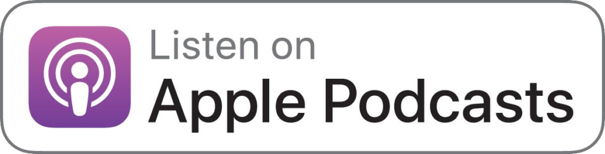

Lesconfesiones
by Valentina Godfrid & Sofie Elliot
Valen y Sofi son una pareja casada que llevan 4 años haciendo contenido para el canal de Youtube Como Salir del Closet con Valen y Sofi. Lesconfesiones es un NUEVO SEGMENTO del canal que derivo en PODCAST. En LESCONFESIONES podrás escuchar historias de nuestros oyentes, historias de amor y desamor, de S3xo, intensidad, miedos, curiosidad y mucho mas...


Bad Queers
by Shana Sumers & Kris Chesson
This podcast is for people who feel like they came out of the closet and got placed in a box. It’s time to put the u-haul theory to bed, and connect over being bad queers. Join Kris and Shana from the HER App to discuss breaking stereotypes, owning your identity and their unpopular queer opinions. Bad queers will leave you both offended and inspired by the news, stories and advice about the very fluid, very real LGBTQ+ experience.

Afro Queer
by Selly Thiam, Rachel Wamoto & Maeve Frances
AfroQueer is a podcast from AQ Studios telling the stories of Queer Africans from across the continent and diaspora. Our podcast celebrates queer love, and explores the laws affecting our lives, migration, media, race, class, censorship, family and sex (obviously). Along the way, we also share some bitter truths of what it means to be Queer and African, but also spotlight individuals shifting the landscape of African queerness.